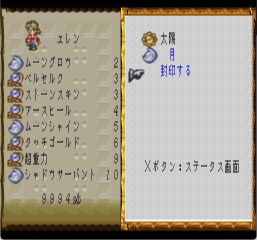

サガシリーズと陰陽五行説
はじめに
twitterのフォロワーさんのツイートを見ていて、五行説の観点でサガを考察している方を数名見かけるのですが、五行説というものを私がよくわかっていなかったので調べてみました。で、わかったのですが、サガシリーズって五行説に関連するものが結構頻繁に出て来ていたんですね。（今更）認識しました。
というわけでこの記事は、（陰陽）五行説についてと、歴代サガシリーズで五行説がどのような形で登場しているのかをまとめてみた記事です。
陰陽五行説
中国の思想に「五行思想（ごぎょうしそう）」というものがあります。五行説ともいいます。五行説は陰陽説よりも後から出来たので、当初から陰陽説と一体であり、陰陽五行説とも言われます。
五行思想とは、古代中国に端を発する自然哲学の思想。万物は火・水・木・金・土の5種類の元素からなるという説です。肉眼で見える惑星（火星・水星・木星・金星・土星）を五行と対応させたものです。5種類の元素は「互いに影響を与え合い、その生滅盛衰によって天地万物が変化し、循環する」という考えが根底に存在します。

※画像はこちらから引用
※相生（そうしょう）：順送りに相手を生み出して行く、陽の関係。
※相剋（そうこく）：相手を打ち滅ぼして行く、陰の関係。
五行それぞれの意味合いは以下の通り。
| 五行 | 説明 |
|---|---|
| 木（もく） | 「春」の象徴。木の花や葉が幹の上を覆っている立木が元となっていて、樹木の成長・発育する様子を表す。 |
| 火（か） | 「夏」の象徴。光り煇く炎が元となっていて、火のような灼熱の性質を表す。 |
| 土（ど） | 季節の変わり目、「土用」の象徴。植物の芽が地中から発芽する様子が元となっていて、万物を育成・保護する性質を表す。 |
| 金（ごん/こん） | 「秋」の象徴。土中に光り煇く鉱物・金属が元となっていて、金属のように冷徹・堅固・確実な性質を表す。 |
| 水（すい） | 「冬」の象徴。泉から涌き出て流れる水が元となっていて、これを命の泉と考え、胎内と霊性を兼ね備える性質を表す。 |
五行にはそれぞれ対応する季節や方角、色、霊獣が存在します。方角の観点では、「五」は四方に中央を加えたものであるとされています。四方に対応する霊獣は青龍、朱雀、白虎、玄武で、四神と呼ばれます。中央を司るのは麒麟（または黄竜（こうりゅう、おうりゅう））です（※1）。四神と麒麟（黄竜）を合わせて五神あるいは五獣と呼ばれます。麒麟（黄龍）は四神の中心的存在であり、四神の長とも呼ばれています。
※1 黄竜は皇帝の権威を象徴する竜とされたが、後に麒麟と置き換えられたり、同一視されるようになりました。
| 要素 | 木 | 火 | 土 | 金 | 水 |
|---|---|---|---|---|---|
| 季節 | 春 | 夏 | 土用(※2) | 秋 | 冬 |
| 方角 | 東 | 南 | 中央 | 西 | 北 |
| 色 | 青 | 赤 | 黄 | 白 | 黒 |
| 霊獣 | 青龍 | 朱雀 | 黄龍 （麒麟） | 白虎 | 玄武 |
麒麟は瑞獣（ずいじゅう）と呼ばれる獣の一体でもあります。瑞獣は瑞兆（ずいちょう、良い事が起こる前兆のこと）として姿を現すとされる、何らかの特異な特徴を持つ動物のことです。瑞獣の中にはこの世の動物達の長だと考えられた特別な4体の霊獣（四霊：霊亀、鳳凰、応竜、麒麟）もいて、麒麟はその一体でもあります。
ちょっとややこしくなってきたので、四神と瑞獣、及びその周辺を図で整理するとこうなります。麒麟は五神であり四霊であり瑞獣でもあるというなんか忙しそうな獣です。
サガシリーズと陰陽五行説
以上が陰陽五行説の概要なのですが、この思想はサガシリーズで頻繁に登場します（河津さんが五行説好きなのかな・・・？）。以降、シリーズ毎にどのような形で登場しているのかを見てみます。
魔界塔士サガと五行説
まずは魔界塔士サガ。四神の青龍、朱雀、白虎、玄武は魔界塔士サガのボスですね。魔界塔士の世界では、アシュラ（阿修羅）が四神を生み出したとされていますが、阿修羅は仏教の神様で四神とは全然関連性はありません。まあ魔界塔士サガはいろんな世界がごっちゃになった世界なのでなんでもありなのでしょう。


一方、黄竜はこうりゅうという名で真の塔で通常モンスターとして登場します。
麒麟はきりんで味方のみが変身できる最高レベルのモンスターとして登場します。
五行説が取り入れられていることがわかりますね。中心的存在である麒麟が味方限定モンスターというのもなんだか面白いところです。「アシュラでも生み出すことができなかった」ということなのでしょうか？
秘宝伝説と五行説
次はサガ2秘宝伝説。こちらでもモンスターとして五神が登場します。亀系の最高レベルモンスターとしてげんぶ、虎はびゃっこ、鳥はすざく、ドラゴンはせいりゅう、キメラ系できりんが登場します。秘宝伝説では全員、味方モンスターとしてのみ登場します。


ミンサガと五行説
ミンサガでは火、水、土、木、金の精霊珠を集めて妖精王に会うというイベントがあります。精霊珠は五行を意識したものですね。
集めた精霊珠を捧げると妖精王が登場し、妖精王の冠を手に入れることができます。
また、ミンサガには「陣」という連携の強化版みたいなシステムがあります。その陣の中の一つである「聖獣陣」は、ゲーム内では明記されてはいないですが、エフェクトはおそらく五行を意識したもの。
（以下画像参照。5つの球体があり、五行を意識したかのような配色をしている）
聖獣陣の動画はこちら。
ロマサガ2と陰陽五行説
ロマサガ2はリマスター版で「陰陽師」というクラスが登場しました。
陰陽師は古代日本の官職の一つで、陰陽五行説に基づき、占いや祈祷で平安京の人々を守っていたとされています。
※画像はこちらから引用。
ロマサガ3と陰陽五行説
次はロマサガ3。術の体系が蒼龍、朱鳥、白虎、玄武と太陽、月となっています。青龍は蒼龍、朱雀は朱鳥とも呼ばれるため、四神＋陰（月）陽（太陽）です。

黄竜は黄竜剣という技で登場します。術と黄龍剣で陰陽五行説に則っていることがわかります。以下はロマサガ3の黄龍剣。
さらに玄武の鎧、白虎の鎧、朱鳥の鎧、蒼龍の鎧、黄龍の鎧があり、これも五行に則ったものになっています。
主人公選択時に宿星を選択する際、歳星（さいせい）、螢惑（けいこく）、鎮星（ちんせい）、太白（たいはく）、辰星（しんせい）から選択しますが、これも五行です。
※画像はこちらから抜粋
河津さんは以下のツイートで「四魔貴族の四属性を五行で迎え撃つという構造になってます。」とおっしゃっていることから、意図的にこういう構成にしていることがわかります。
土属性。ロマサガではアディリス。黒い龍として描かれてます。ミンサガでは、よりアースワームっぽい姿に変わりました。五行だと土徳の色は黄。黄龍は中国清朝のシンボルですが、ロマサガ３では黄龍剣として最強技の一つになってます。四魔貴族の四属性を五行で迎え撃つという構造になってます。
— 河津秋敏 (@SaGa30kawazu) April 26, 2014
さらに、2021年2月25日のロマサガRSの生放送中、河津さんがロマサガ3の四魔貴族について話されていました。ここでも五行の話があって興味深かったので是非見てみてください。
※28:21頃～30:25頃まで
これは余談ですが、四魔貴族はソロモン72柱という悪魔が元ネタとなっています（以下表参照）。
| 四魔貴族 | ソロモン72柱（元ネタ） | 元ネタの悪魔の詳細 |
|---|---|---|
| アラケス | アロセス | 獅子の獣人。博識な知識を与える。 別名で「アロケス」や「アロカス」という名もある。 アロケルは立派な馬にまたがった、燃えるような眼を持つ真っ赤なライオンの頭を持った兵士の姿で現れる。 |
| アウナス | アミー | 燃えるような炎の姿をした悪魔。使い魔を与える。 別名で「アウナス」や「ハンニ」という名もある。 |
| ビューネイ | ブネ | 竜の悪魔。悪霊を操る能力をもつ。 ３つの頭をもつ龍の姿で現れます。 犬、グリフォン、人間の3つの首を持つ竜の姿で現れ、高音の心地よい声で話します。 |
| フォルネウス | フォルネウス | 大海の怪物（巨大なサメ）の姿をした悪魔。 人間にカリスマ性を与える。 |
ロマサガRSのビューネイが「我が本質は龍なのだ」と言っているのは、元ネタのブネが竜の悪魔だからなんですね。
さらに余談ですが、ロマサガRSのポルカ編で出てきたイゴマールの本当の名前はオリアクスで、ソロモン72柱にもオリアクスという悪魔がいます。この悪魔は「星の動きを読むための知識を教える。」とされており、ロマサガRSの星読みの力はここからきていることがわかります。
恐らく河津さんの言う「魔貴族」は「ソロモン72柱」でその中の4体が「四魔貴族」ということなんでしょうね。
サガフロと五行説
次はサガフロ。サガフロでは五行は出てきませんが、空術の資質を持つ麒麟というキャラクターが存在します。
中国の神話の麒麟は「普段の性質は非常に穏やかで優しく、足元の虫や植物を踏むことさえ恐れるほど殺生を嫌う。」とされています。
サガフロの麒麟は口調が穏やかであったり、虐待されていた子供を麒麟の空間にかくまっているという設定があったりするのでイメージにぴったりですね。
以下はサガフロの麒麟の画像。
アンサガと五行説
※アンサガ未プレイなので違うこと言ってたらすみません。
アンサガは術の体系が火行術、土行術、金行術、水行術、木行術と禁呪です。五行＋禁呪という形になっていることがわかります。
また、アンサガには「エスカータの宝剣」と呼ばれる剣があり、この宝剣の力を引き出すアイテムとして5つの「エレメンタルギア」というものがあります。
このエレメンタルギアは火、土、金、水、木の5属性で、これも五行になっていることがわかります（以下表参照）。
| 属性 | アイテム名 | 正式名称 |
|---|---|---|
| 木のエレメンタルギア | 雷神の指輪 | リンゲスソルバルディン |
| 金のエレメンタルギア | 美神の手袋 | ハンシュファーゲリヒ |
| 水のエレメンタルギア | 嵐神の長靴 | ザッパシュトルムーバ |
| 土のエレメンタルギア | 巨人の胸甲 | ハルニスウォルベリスク |
| 火のエレメンタルギア | 戦神の栄冠 | クランスクリーグフレッド |
サガスカと五行説
次はサガスカ。サガスカはアンサガと同様に火行術、土行術、金行術、水行術、木行術の５つの術があり、五行がそのまま術の体系になっていることがわかります。
また、サガスカには「五行武器」という強力な武器があります。火、土、金、水、木の武器があり、名前の通り五行と同じ属性になっています。
火の五行武器
土の五行武器
金の五行武器
水の五行武器
木の五行武器
さらに、サガスカでは、北東界外という地域でこの五行になぞらえた場所があります（下図参照）。
これは配置もちゃんと五行の思想を反映した形になっていますね。
※画像はこちらから引用
ロマサガRSと陰陽五行説
最後にロマサガRS。以下のNZさんのツイートからわかるように、リアム編で敵として登場した五神獣は五行と対応させた敵だったみたいですね。
スクウェア・エニックス様の[ロマンシング サガ リ・ユニバース]の背景を担当しております。
— NZ (@KN01971084) March 28, 2023
五神獣 戦闘背景画面を描かせて頂きました。
五行の要素がある専用背景という発注で制作しました。 pic.twitter.com/C06b5s6tGx
各敵キャラと五行との対応は以下のような感じでしょうか（武器種の横に記載されている属性から判断）。
ロマサガRSで扱う属性は五行ではないので、メロトセロイとラゼムの属性が五行と対応していなかったり、五行的には土を司る黄龍が四神の中心的存在なのに対して、五神獣のリーダーはラゼム（金？）だったりでちょっと強引な感じはします。しかしこれは長い間運営し続けるソシャゲなので仕方のないことなのでしょうね。
イヴェリス＝水
ハーディ＝土
オルレット＝火
メロトセロイ＝木（風）
ラゼム＝金（陽）
以上です。陰陽五行説はサガシリーズで結構頻繁に出てくる概念だということがわかりますね。
サガシリーズ以外でも五行ってよく出てくるのでしょうか？FFⅥの幻獣にキリンっていたなー、というぐらいしか私は思いつきませんが、調べればきっといっぱいあるんでしょうね。
おまけ。FFⅥの幻獣キリン。
おしまい。
陰陽五行説の参考
- wikipedia 五行思想
- wikipedia 陰陽五行思想
- 陰陽五行説（特に五行説について）
- wikipedia 七曜
- 青龍、朱雀、白虎、玄武、そして麒麟！中国由来の霊獣5選【しゃれこうべが語る元ネタの世界 第40回】
- wikipedia 陰陽
- wikipedia 黄竜
- wikipedia 青竜
- wikipedia 朱雀
- wikipedia 白虎
- wikipedia 玄武
- wikipedia 四神
- wikipedia 麒麟
- ピクシブ百科事典 黄竜
- ピクシブ百科事典 麒麟
瑞獣の参考
陰陽師の参考
アンサガの参考
- UNLIMITED:SaGa Wiki 全術一覧
- UNLIMITED:SaGa Wiki 術について
- アニヲタWiki(仮) 術(アンリミテッド・サガ)
- アーミック編
- ローラ編
- UNLIMITED:SaGa Wiki* メインシナリオ/ローラ
- ＳａＧａ ＫＩＮＧＤＯＭ メインセリフ集（ローラ編）
- サガ用語辞典 Wiki 【エスカータの宝剣】
- サガ用語辞典 Wiki 【巨神の胸甲】
- サガ用語辞典 Wiki 【雷神の指輪】
- サガ用語辞典 Wiki 【嵐神の長靴】
- サガ用語辞典 Wiki 【美神の手袋】
- サガ用語辞典 Wiki 【戦神の栄冠】
ソロモン72柱の参考
- 黒猫魔術店 26ブーネ・ソロモン72柱の意味・魔術的能力
- 黒猫魔術店 30フォルネウス・ソロモン72柱の意味・魔術的能力
- 黒猫魔術店 52アロセス・ソロモン72柱の意味・魔術的能力
- 黒猫魔術店 58アミー・ソロモン72柱の意味・魔術的能力
- 黒猫魔術店 59オリアクス・ソロモン72柱の意味・魔術的能力
- ピクシブ百科辞典 アミー
- 無から生まれる有もあるさ 悪魔 アミーについて
- 世界神話目録 【アロケル】目を覗いた人間の死に様を見せるソロモン72柱の悪魔とは？
- 世界神話目録 【ブネ】墓の死体をそのまま移動させるソロモン72柱の悪魔とは？
- 世界神話目録 【ソロモン72柱の悪魔】すべての悪魔の特徴簡易まとめ!!
- ファンタジー博物館 ソロモン王の72柱の悪魔
その他の参考